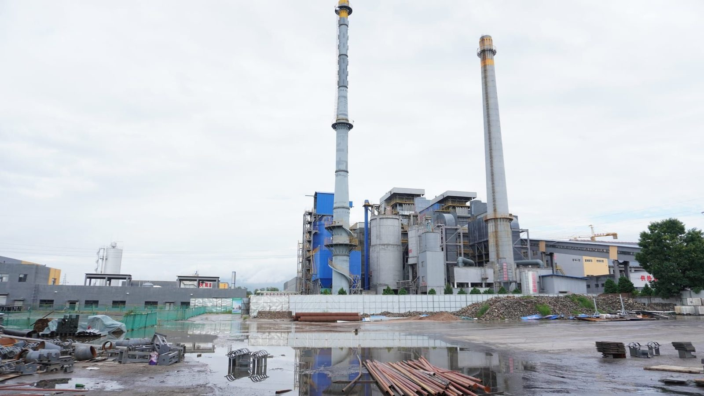
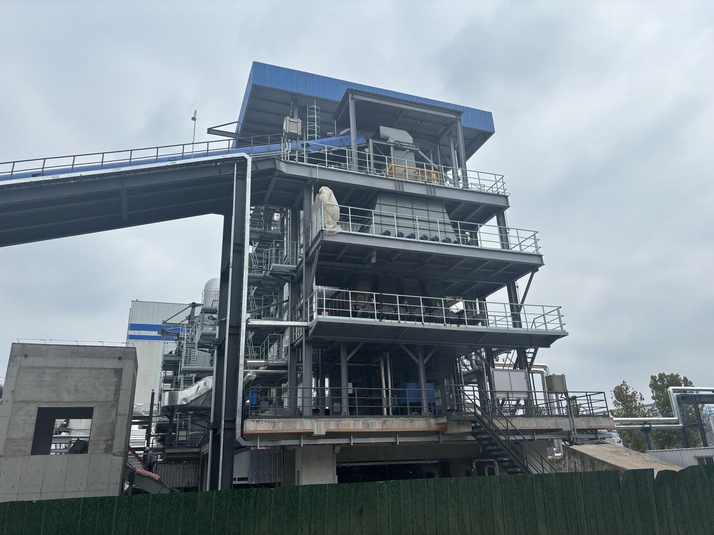
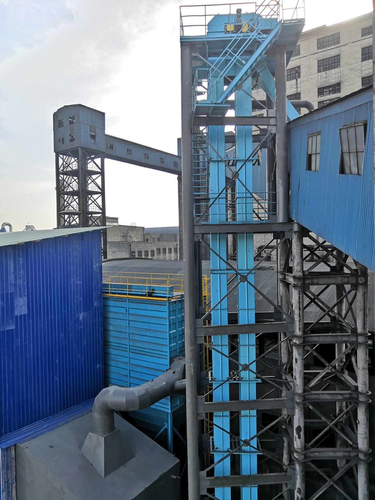
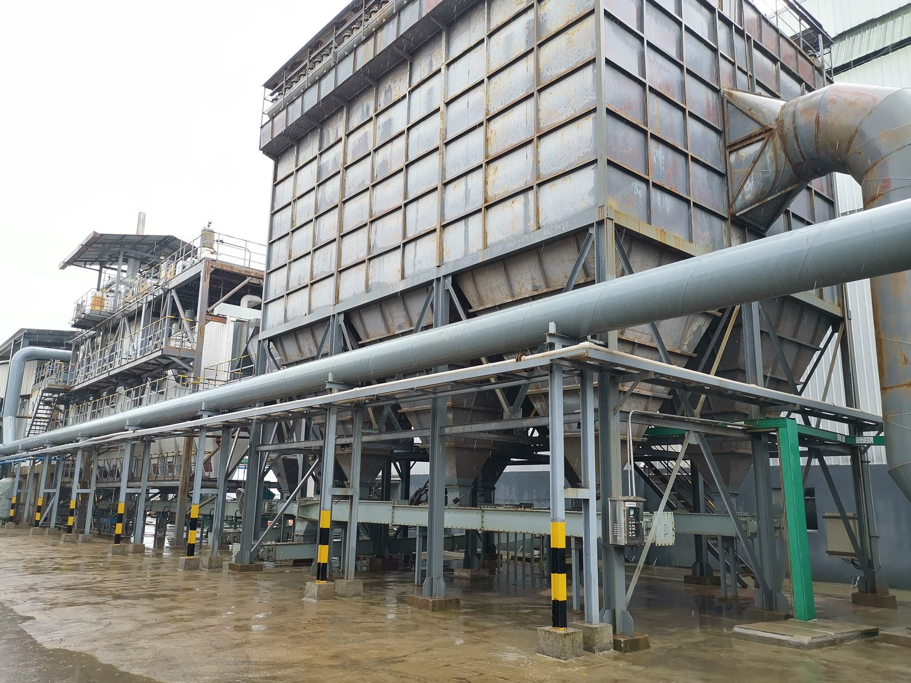
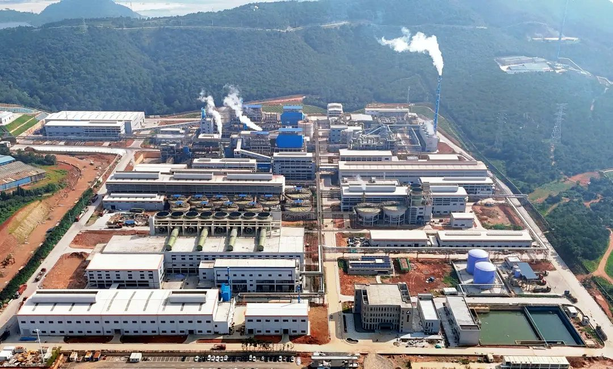

От тепловых электростанций до химических комплексов — как конвейерные системы Тяньи обеспечивают надёжное движение сыпучих материалов в разных отраслях и на разных континентах.

Полная линия транспортировки порошков и гранул с пневматическими шиберными клапанами, роторными питателями и пылеулавливанием для крупного производителя хлорщёлочи.
Смотреть оборудование →
Система дальнего ленточного транспорта и укладки/заборки для тепловой электростанции, рассчитанная на непрерывную работу 1 500 т/ч.
Смотреть оборудование →
Высокопроизводительный магистральный ленточный конвейер для карьера медной руды с усиленными роликами и подвижными перегрузочными станциями на пересечённой местности.
Смотреть оборудование →
Закрытые шнековые и цепные конвейеры для подачи ила и отходов в линии сжигания, герметичная конструкция для контроля выбросов и запаха.
Смотреть оборудование →
Модернизация высокоподъёмного центрально-цепного ковшового элеватора на цементном заводе: рост производительности при снижении простоев линии питания печи.
Смотреть оборудование →
Система пластинчатого и ленточного транспорта щепы и биомассы, рассчитанная на абразивные влажные сыпучие материалы.
Смотреть оборудование →
Многоходовые распределительные клапаны и шиберные затворы, направляющие гранулы карбамида между силосами и линиями фасовки с точным контролем потока и минимальным разрушением.
Смотреть оборудование →
Комплексная схема дробления, грохочения и питания для обогатительной фабрики, рассчитанная на круглосуточную тяжёлую работу на удалённом объекте.
Смотреть оборудование →
Полная система транспортировки сыпучих для крупного когенерационного проекта НПЗ, включая угольный транспорт, удаление золы и линии подачи вспомогательного топлива.
Смотреть оборудование →
Вспомогательная газовая система для производства глинозёма 800 тыс. т/год: закрытые линии транспорта сырья и побочных продуктов с пылеподавлением.
Смотреть оборудование →
Система кальцинации во вращающейся печи для производства углеродной продукции на углеродном заводе Chalco с оборудованием подачи и выгрузки высокотемпературных сыпучих.
Смотреть оборудование →
Закрытая пневматическая и механическая система транспорта порошка оксида цинка, рассчитанная на безпылевую работу на химических предприятиях.
Смотреть оборудование →
Вид сверху крупного промышленного комплекса с интегрированной инфраструктурой транспортировки сыпучих по нескольким производственным площадкам, конвейерным системам и складам.
Запросить расчёт →Наша инженерная команда спроектирует полное решение по транспортировке сыпучих под ваш материал, производительность и условия площадки. Пришлите требования и получите расчёт.
Запросить расчёт →